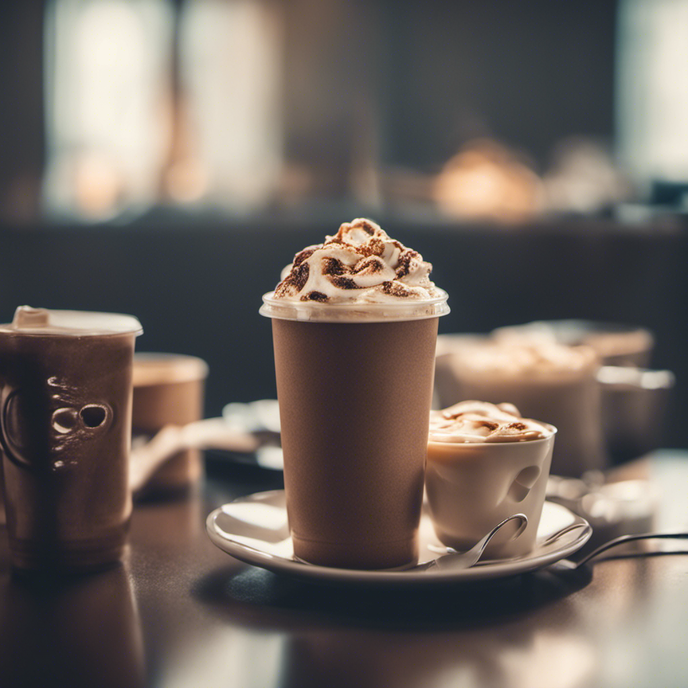
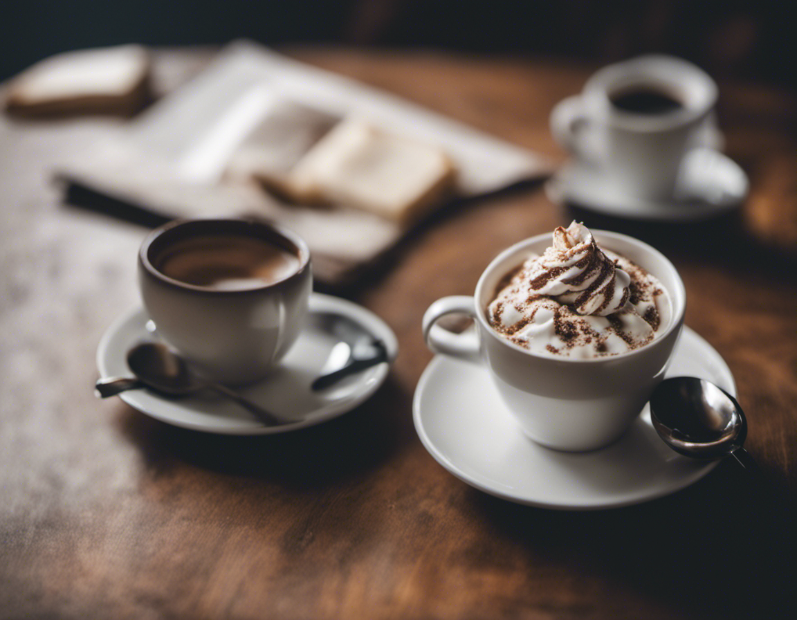

Bienvenido a Monhé Restaurant & Coffee
 

En Monhé Restaurant & Coffee, nos enorgullece ser más que un simple lugar para disfrutar de una buena comida y una taza de café aromático. Somos un lugar donde la pasión por la cocina se combina con el amor por el café, creando una experiencia culinaria única y acogedora que trasciende las expectativas tradicionales.
Fundado en 2023, Monhé Restaurant & Coffee nació de la visión de Jane Doe y Mr. So and So, amantes apasionados de la gastronomía y el café. Inspirados por el deseo de compartir sabores auténticos y momentos inolvidables, nuestro equipo se ha dedicado a perfeccionar cada detalle, desde la selección de ingredientes frescos hasta la creación de platos exquisitos y bebidas excepcionales..
En Monhé Restaurant & Coffee, valoramos la calidad y la autenticidad en todo lo que hacemos. Nuestra cocina es un tributo a la diversidad de sabores del mundo, ofreciendo platos que van desde los clásicos favoritos hasta creaciones innovadoras que sorprenderán a tu paladar. Nuestro café es cuidadosamente seleccionado y meticulosamente preparado para garantizar que cada taza sea una experiencia verdaderamente satisfactoria.
Creemos en dar a la comunidad tanto como recibimos. Estamos comprometidos en apoyar causas locales y promover prácticas sostenibles en nuestra operación. En Monhé, nos enorgullece ser parte de una comunidad más grande y contribuir a su bienestar.
Esperamos que encuentres en Monhé Restaurant & Coffee un lugar donde los sabores se mezclan, las conversaciones fluyen y los momentos se convierten en recuerdos inolvidables. Gracias por unirte a nosotros en este viaje culinario y cafetero. ¡Esperamos verte pronto!